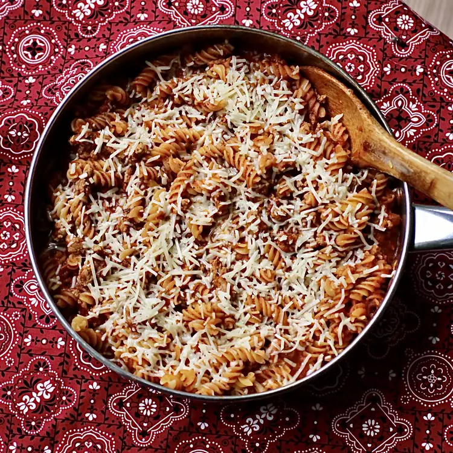

Turkey pasta

A simple but delicious turkey pasta recipe
This recipe if simple to follow. and turkey pasta is not a very complicated meal in the first place with enough love love and care the meal is sure to turn out great.
Ingredients
- 1 pound ground turkey
- 1 medium onion, chopped
- 3 cloves garlic, minced
- 2 tablespoons chopped fresh oregano
- 1 teaspoon garlic powder
- 1 teaspoon dried basil
- 3 cups rotini pasta
- 1 (28 ounce) jar spaghetti sauce
- 1 (14 ounce) can chicken broth
- ¼ cup freshly grated Parmesan cheese, or to taste
Directions
- Heat a high-sided 12-inch skillet with a lid over medium heat. Add ground turkey, onion, and fresh garlic. Cook, stirring occasionally, until meat is browned, about 8 minutes. Season with oregano, garlic powder, and basil. Mix in rotini pasta and stir until well combined.
- Pour in pasta sauce and broth, making sure pasta is completely covered. Bring to a boil, reduce heat, cover, and cook until pasta is tender yet firm to the bite, 7 to 10 minutes.
- Top with Parmesan cheese.